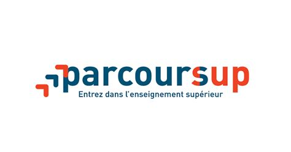
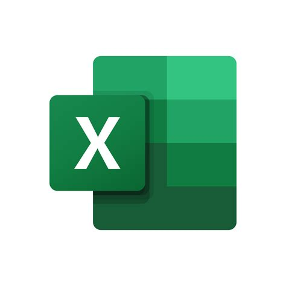
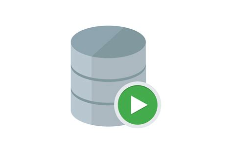
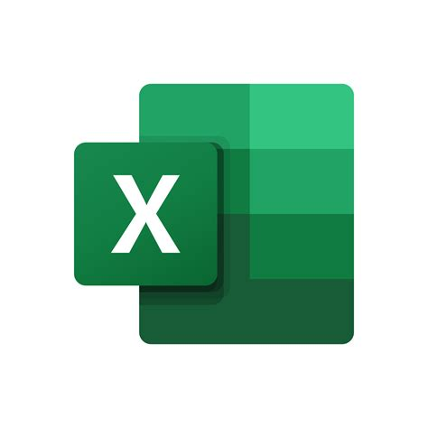
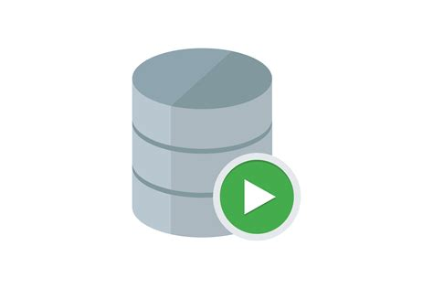

Stage - Parcoursup
Période : Juin 2020
Stage d'un mois dans le cadre de ma seconde première année de DUT STID
Parcoursup est la plateforme nationale d’admission en première année de l’enseignement supérieur en France.
Elle permet aux lycéens, étudiants en réorientation et candidats en reprise d’études de formuler leurs vœux
pour intégrer une formation après le baccalauréat.
Accès à Parcoursup
Missions : Réalisation d'une étude statistique à caractère confidentiel
-
Réalisation d'une étude statistique complète :
Définition du plan statistique
Extraction des données (SQL)
Traitement et Analyse des données (Excel)
Visualisation des données et compte rendu
Languages et Outils utilisés
 



Compétences développées :